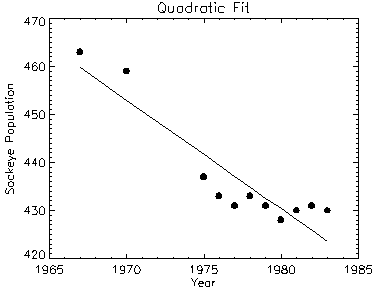

The USERSYM procedure is used to define the plotting symbol that marks points when the PSYM keyword symbol is set to plus or minus 8. Symbols can be drawn with vectors or can be filled. Symbols can be of any size and can have up to 49 vertices.
The symbol you define can be drawn using lines or it can be filled using the polygon filling operator. USERSYM accepts two vector parameters: a vector of x values and a vector of y values. The coordinate system you use to define the symbol’s shape is centered on each data point, and each unit is approximately the size of a character. The color and line thickness used to draw the symbols are also optional keyword parameters of USERSYM.
USERSYM, X [, Y ] [, COLOR = value ] [, / FILL ] [, THICK = value ]
The X and/or Y parameters define the vertices of the symbol as offsets from the data point in units of approximately the size of a character. In the case of a vector drawn symbol, the symbol is formed by connecting the vertices in order. If only one argument is specified, it must be a (2, N ) array of vertices, with element [0, i ] containing the X coordinate of the vertex, and element [1, i ] containing the Y. If both arguments are provided, X contains only the X coordinates.
The color used to draw the symbols, or used to fill the polygon. The default color is the same as the line color.
Set this keyword to fill the polygon defined by the vertices. If FILL is not set, lines are drawn connecting the vertices.
The thickness of the lines used in drawing the symbol. The default thickness is 1.0.
To define the simplest symbol, use a one character-wide dash centered over the data point:
USERSYM, [-.5, .5], [0, 0]
PLOT, FINDGEN(20), PSYM = 8
Make a diamond-shaped plotting symbol. Define vectors of X and Y values before calling USERSYM:
X = [-2, 0, 2, 0, -2]
Y = [0, 2, 0, -2, 0]
USERSYM, X, Y
PLOT, FINDGEN(20), PSYM = 8
The following code illustrates the use of USERSYM to define a new symbol—a filled circle:
; Make a vector of 16 points, A[i] = 2pi/16:
A = FINDGEN(17) * (!PI*2/16.)
; Define the symbol to be a unit circle with 16 points,
; and set the filled flag:
USERSYM, COS(A), SIN(A), /FILL
Using the variables defined in a batch file, we then create the plot, specifying 8 (user-defined) for the PSYM keyword to PLOT:
; Define variables.
@plot01
; Use the LINFIT function to fit the data to a line:
coeff = LINFIT(YEAR, SOCKEYE)
;YFIT is the fitted line:
YFIT = coeff[0] + coeff[1]*YEAR
PLOT, YEAR, SOCKEYE, /YNOZERO, PSYM = 8, $
TITLE = 'Quadratic Fit', XTITLE = 'Year', $
YTITLE = 'Sockeye Population'
; Overplot the smooth curve using a plain line:
OPLOT, YEAR, YFIT
The following figure shows the result of this code:
|
 |
Note: If IDL does not find the batch file, the required directory may not be in your IDL search path. All of the files mentioned are located in the examples/doc subdirectory of the IDL distribution. By default, this directory is part of IDL ’s path; if you have not changed your path, you will be able to run the examples as described here.
|
Original |
Introduced |